On donne ici les équations en polaire de différentes courbes.
r= 1/acos(θ)+bsin(θ)
r=acos(θ)+bsin(θ)
r=p/1+ecos(θ)
r=1/a+bcos(θ)+csin(θ)
On appelle conchoïde d’une courbe (C) par rapport à un point O le
lieu (Γ) des points M et N que l’on obtient en portant sur la
droite OP : PM=−PN=a lorsque P décrit la courbe
C et que a a une valeur constante.
Si l’équation polaire de C est r=f(θ), celle de (Γ) est :
r=f(θ)± a.
Remarque
Si f(θ−π)=−f(θ) alors le double signe est inutile. En effet
un point K de coordonnées polaires r,θ est aussi
et le point K1 de coordonnées polaires −r,θ+π.
Si on considère :
le point M de coordonnées polaires :
f(θ)+a,θ et
θ1=θ+π
On a :
f(θ)+a=f(θ1−π)+a=−f(θ1)+a=−(f(θ1)−a)
le point M de coordonnées polaires f(θ)+a,θ
est donc identique au point de coordonnées polaires :
−(f(θ1)−a,θ) qui est le point N de coordonnées
polaires f(θ1)−a,θ1.
Soient une droite d, un point O non situé sur d et un nombre réel
a.
La conchoïde de Nicomède est le
lieu (Γ) des points M et N que l’on obtient en portant sur la
droite OP : PM=−PN=a lorsque P décrit la droite
d et que a a une valeur constante.
Soit h la distance de O à la droite d.
La conchoïde de Nicomède a comme équation :
| r=h/cos(θ)+a |
Le double signe est inutile car cos(θ−π)=−cos(θ).
Avec Xcas
On tape :
O:=point(0,0); d:=droite(x=3); a:=element(1..5); plotpolar(3/cos(t)+a,t,affichage=rouge)
On a choisit h=3. On peut ainsi faire varier a et voir les 3 cas :
h<a, h=a, h>a.
On peut trouver l’équation cartésienne :
r=rh/x+a donc
r−rh/x=r(x−h)/x=a donc
| (x2+y2)(x−h)2−a2x2=0 |
c’est donc une quartique.
On peut faire une animation et voir la construction de la courbe quand
P se déplace sur la droite d.
On ouvre un écran de géométrie 2D et on tape (on a choisit h=3 et a
entre 1 et 5) pour faire une animation (ne pas oublier de mettre animate
à 0.5 à l’aide du bouton cfg) :
O:=point(0,0);
d:=droite(x=3):;d;
supposons(a=[4.3,-5.0,5.0,0.0]);
plotpolar(3/cos(t)+a,t,affichage=rouge);
T(a,u,x):=(3/(-a*sin(u)*cos(u)^2)-cos(u)/sin(u))*x+
(a+3/cos(u))^2/(a*sin(u));
animation(seq('droite(y=tan(u)*x)',u,-10,10,0.1));
animation(seq('P:=point(3+i*tan(u)*3)',u,-10,10,0.1));
animation(seq('M:=point((3/cos(u)+a)*exp(i*u))',u,-10,10,0.1));
animation(seq('droite(y=T(a,u,x),affichage=vert)',u,-10,10,0.1));
On obtient :
La conchoïde de Nicomède (en rouge) :
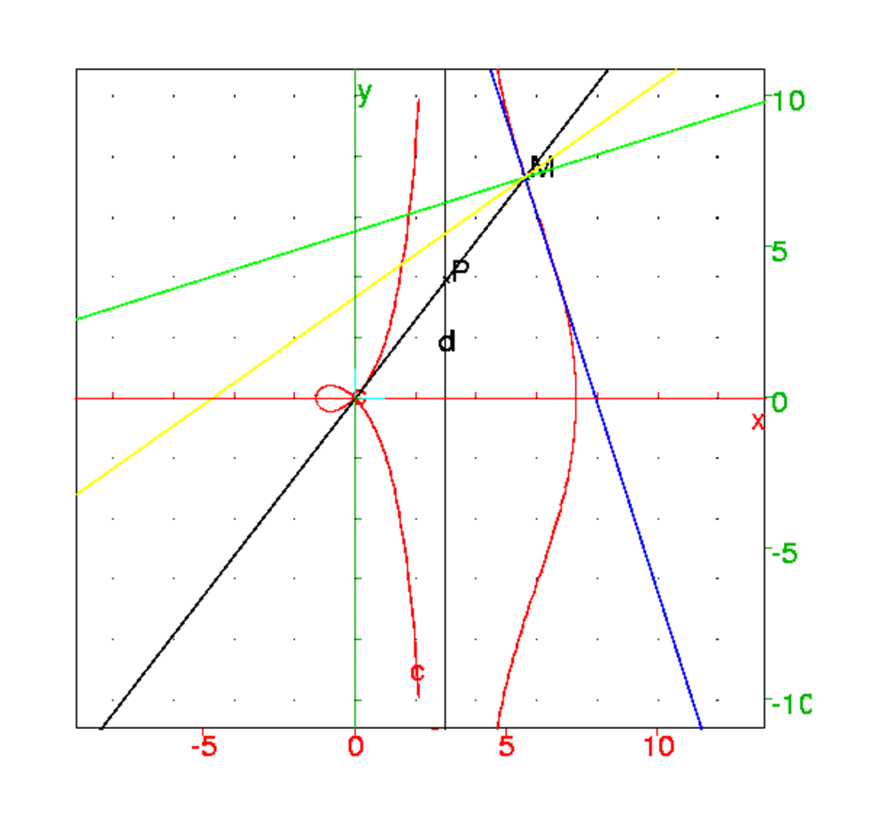
On suppose maintenant que des rayons parallèles à l’axe des y se
réfléchissent
sur la deuxième nappe (lorsque −π/2<θ<π/2).
Pour avoir la trace des rayons réfléchis, on tape :
O:=point(0,0);
d:=droite(x=3):;d;
supposons(a=[4.3,-5.0,5.0,0.0]);
plotpolar(3/cos(t)+a,t,affichage=rouge);
T(a,u,x):=(3/(-a*sin(u)*cos(u)^2)-cos(u)/sin(u))*x+
(a+3/cos(u))^2/(a*sin(u));
N:=unapply(equal2list(equation(perpendiculaire(
M,droite(y=T(a,u,x)))))[1],[a,u,x]);
//N(a,u,x):=(a*sin(u)*cos(u)^2)/(3+a*cos(u)^3)*x+
//(9*tan(u)+3*a*sin(u))/(3+a*cos(u)^3);
supposons(u:=[1.2,(-pi)/2,pi/2,0.05]);
M:=point((3/cos(u)+a)*exp(i*u));
dd:=symetrie(droite(y=N(a,u,x)),
demi_droite(M,point(i*(3/cos(u)+a)*sin(u)))):;
trace(dd);
On obtient quand on fait bouger le curseur u pour avoir la trace
des rayons réfléchis :
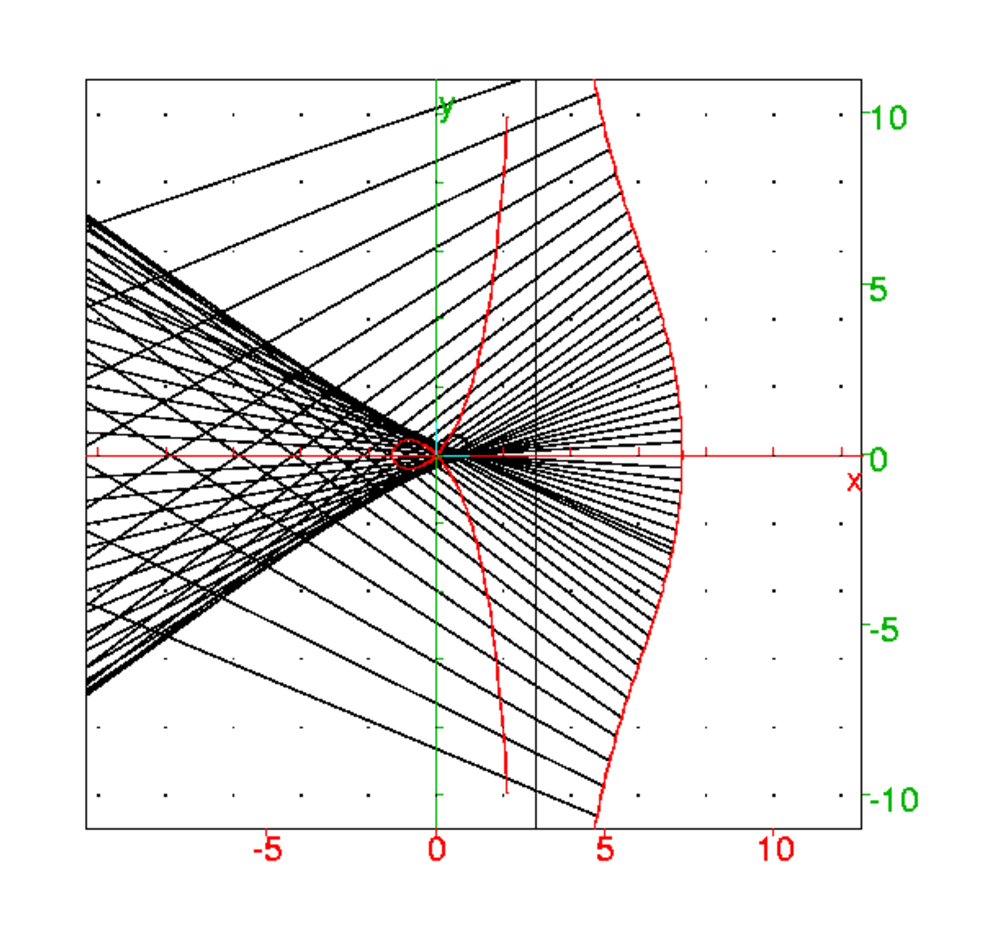
On construit ainsi le limaçon de Pascal.
Soit un cercle C de rayon R, un point O situé sur C et un nombre
réel a. Le limaçon de Pascal est le
lieu (Γ) des points M et N que l’on obtient en portant sur la
droite OP : PM=−PN=a lorsque P décrit le cercle
C et que a a une valeur constante.
Une conchoïde de cercle a comme équation :
| r=2Rcos(θ)+a |
Le double signe est inutile car cos(θ−π)=−cos(θ).
Avec Xcas
On tape :
O:=point(0,0); C:=cercle(3,3); a:=element(1..5); plotpolar(6*cos(t)+a,t,affichage=rouge);
On a choisit R=3. On peut ainsi faire varier a et voir les 3 cas :
2R<a, 2R=a, 2R>a.
Lorsque 2R=a on a r=2R(cos(θ)+1)=a(cos(θ)+1) c’est donc une
cardioïde.
On peut faire une animation et voir et les points M, N et la
construction de la courbe quand P se déplace sur le cercle C.
On tape :
O:=point(0,0);
C:=cercle(3,3);
a:=element(1..5);
plotpolar(6*cos(t)+a,t,affichage=rouge);
animation(seq('droite(y=tan(u)*x)',u=-10..10));
animation(seq('P:=point(6*cos(u)*exp(i*u))',u,-10,10));
animation(seq('M:=point((6*cos(u)+a)*exp(i*u))',u,-10,10));
animation(seq('N:=point((6*cos(u)-a)*exp(i*u))',u,-10,10));
Soient une droite d, un point O non situé sur d et H la projection
orthogonale de O sur d.
Soit h=OH la distance de O à la droite d et C le cercle de diamètre
OH.
Soit P un point de d et N l’intersection de OP avec C.
Lorsque P décrit la droite d, le lieu de M, obtenu en portant sur OP,
OM=NP est une cissoïde droite.
Si O est l’origine, OH l’axe des x et t l’angle de OP avec Ox,
on a :
P=point(h/cos(t)*exp(i*t)), N=point(h*cos(t)*exp(i*t)),
OM=NP=h*exp(i*t)*(1/cos(t)−cos(t))=h*exp(i*t)*(1−cos(t)2)/cos(t)=x+i*y=r*exp(i*t)
Donc :
x=h*sin(t)2 et y=h*tan(t)*sin(t)2 et
r=h*sin(t)2/cos(t)
donc l’équation polaire de la cissoïde droite est :
r=h*sin(t)2/cos(t).
Avec Xcas
On tape :
O:=point(0,0); h:=element(0..6); d:=droite(x=h); cercle(0,point(h)); plotpolar(h*sin(t)^2/cos(t),t,affichage=rouge);
Cette courbe ressemble à un morceau de conchoïde de droite lorsque a<h.
Un exemple de TP : la cissoïde ou la duplication du cube
Dans un repère orthonormé O,i,j,
on considère le point A de coordonnées (1,0), C le cercle de diamétre
OA et la droite D d’équation x=1.
Soit un point N=1+ia sur D. La droite ON coupe C en P.
Trouver les équations cartésienne, paramétrique et polaire du lieu de
M défini par :
OM=PN.
Avec Xcas, on tape dans un niveau de géométrie 2d :
C:=cercle(0,point(1)) D:=droite(x=1):;D supposons(a=[-2.7,-5,5,0.1]); N:=element(D,a) d0:=droite(0,N) P:=inter_unique(C,d0) M:=point(N-P) L:=lieu(M,N) affichage(L,1) equation(L) parameq(L)
On obtient :
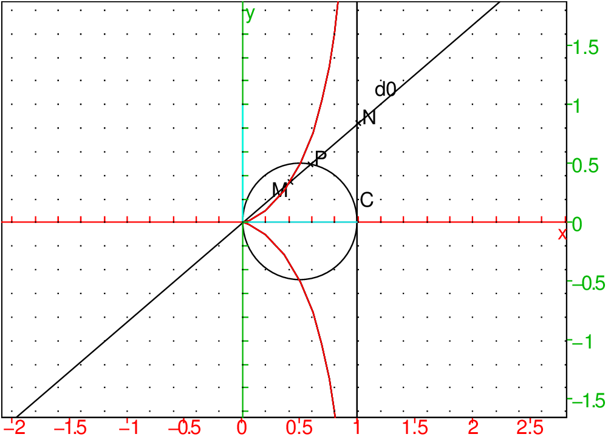
^3-x*y^2+y^2^2)/(t+i)^2)/(t+i))^3)*x+a^3)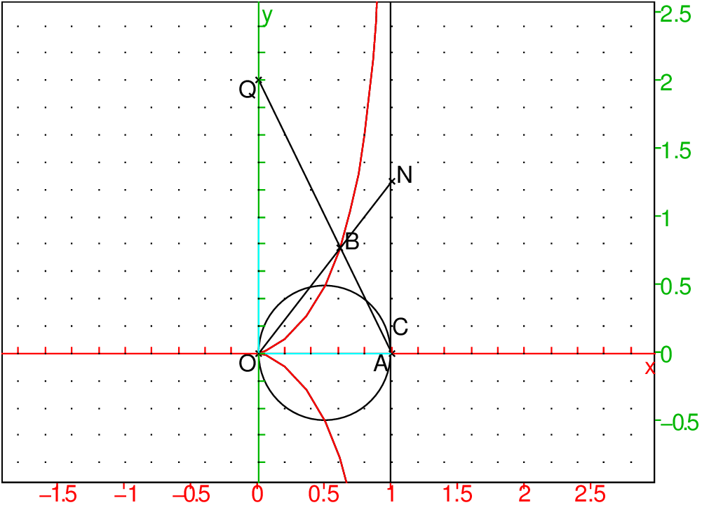
Q:=point(2*i) B:=inter_unique(droite(A,Q),L,[A]) N:=inter_unique(droite(O,B),D,[O]) longueur(A,N)
On trouve pour longueur(A,N) :
2^(1/3)
en effet si a=y/x, et si M(a)∈ L (L=la cissoïde), la droite OM(a)
coupe la droite
D(x=1) en un point de coordonnées (1,a) et la droite AM(a) coupe la
droite x=0 en un point Q de coordonnées (O,a3) (puisque AM(a) a
comme équation y=((−a3)*x+a3)y).
Réciproquement, soient Q=(0,a) et B le point d’intersection de la droite
AQ avec la cissoïde. La droite OB coupe D en P=(1,a1/3).
Soient une droite d, un point O non situé sur d et H la projection
orthogonale de O sur d.
Soit h=OH la distance de O à la droite d .
Soit P un point de d.
Lorsque P décrit la droite d, le point M de la droite OP tel que
PM=overlineHP est
une strophoïde droite.
Si O est l’origine, OH l’axe des x, et t l’angle de OP avec Ox,
on a:
P=point(h/cos(t)*exp(i*t))=point(h*(1+i*tan(t)))
|OP|=h/cos(t)
H=point(h)
PH=h*tan(t)
On a :
OM=OP+overlineHP
donc :
OM=OP+OP*cos(t)*tan(t))=OP*(1+sin(t))
Donc on a :
OM=h*(1+sin(t))/cos(t)*exp(i*t))=r*exp(i*t)
donc l’équation polaire de la strophoïde droite est :
r=h*(1+sin(t))/cos(t).
Cette courbe ressemble à un morceau de conchoïde de droite lorsque a>h.
Remarque
Si on prend l’origine en H on a comme équation polaire:
r=−h*cos(2*t))/cos(t).
Avec Xcas
On peut faire une animation et voir la construction de la courbe quand
P se déplace sur la droite d.
On tape :
O:=point(0,0);
h:=element(1..5);
d:=droite(x=h);
plotpolar(h*(1+sin(t))/cos(t),t,affichage=rouge);
animation(seq('droite(y=tan(u)*x)',u,-10,10,0.5));
animation(seq('P:=point(h+i*tan(u)*h)',u,-10,10,0.5));
animation(seq('M:=point(h*(1+sin(u))/cos(u))*exp(i*u)',u,-10,10,0.5));
Étant donnés deux points F1 et F2 et un nombre réel k, le lieu
de M de coordonnées (x;y) tel que MF1*MF2=k2 est une ovale de
Cassini.
Si O est le milieu de F1F2 et OF1=c, on a :
MF12=(x+c)2+y2 et MF22=(x−c)2+y2 donc
MF12*MF22=((x+c)2+y2)*((x−c)2+y2)=
c4−2*c2*x2+2*c2*y2+(x2+y2)2
Alors le lieu de M a pour équation :
(x2+y2)2−2*c2*(x2−y2)=k4−c4
ou encore
(x2+y2+c2)2=4*c2*x2+k4
Une lemniscate de Bernoulli est une ovale de Cassini avec :
k=OF1=c.
Posons a=c*√2.
Donc c’est le lieu de M tel que : MF1*MF2=OF12 et on a :
(x2+y2)2=a2*(x2−y2)
si
x=r*cos(t) et y=r*sin(t) on a :
r4=a2*r2*(cos(t)2−sin(t)2)=a2*r2*cos(2*t)
donc
r2=a2*cos(2*t)
L’équation polaire d’une lemniscate de Bernouilli est :
r=± a*√cos(2*t)
Avec Xcas
On tape :
O:=point(0,0); a:=element(1..5); F1:=point(-a*sqrt(2)/2,0); F2:=point(a*sqrt(2)/2,0); plotpolar(a*sqrt(cos(2*t)),t=0..2*pi);
L’équation cartésienne du limaçon de Pascal est :
(x2+y2−a*x)2=b2*(x2+y2)
L’équation polaire du limaçon de Pascal est :
r=a*cos(t)+b
Avec Xcas
On tape :
a:=element(1..5); b:=element(0..5); plotpolar(a*cos(t)+b,t=-10..10);
Soit la cardioïde de paramètre a ayant sont point de rebroussement en O
et passant par le point A=2a.
Son équation cartésienne est :
(x2+y2)2−2*a*x*(x2+y2)−a2*y2
Son équation paramétrique est :
x=a*(1+cos(t))*cos(t)=(2*cos(t)+cos(2t)+1)*a/2,
y=a*(1+cos(t))*sin(t)=(2*sin(t)+sin(2t)+1)*a/2.
Son équation polaire est :
r=a*(1+cos(t)).
Une cardioïde est le lieu d’un point M situé sur un cercle de rayon
a/2 qui roule sans glisser sur un
cercle fixe de même rayon et de centre a/2.
On tape :
assume(t=[1.570796325,0,2*pi]); cercle(0,1); cercle(2*exp(i*t),1); A:=point(2*exp(i*t)-exp(2*i*t)); plotparam(affixe(A),t) //lieu(A,t);
On obtient une cardioïde de paramètre a=2 ayant sont point de rebroussement
en 1 et passant par le point A=−3.
On peut se reporter à la section 17.2.1 pour voir les animations sur
les épicycloïdes.
La cardioïde a pour équation polaire r=a(cos(t)+1).
On peut calculer la longueur d’une cardioïde.
On a :
ds2=dr2+r2dt2
On tape :
normal(diff(a*(cos(t)+1),t)^2+(a*(cos(t)+1))^2)
On obtient :
a^2*cos(t)^2+2*a^2*cos(t)+a^2*sin(t)^2+a^2
On tape :
trigcos(halftan(trigcos(a^2*cos(t)^2+2*a^2*cos(t)+a^2*sin(t)^2+a^2)))
On obtient :
4*a^2*cos(t/2)^2
On tape :
2*int(2*a*cos(t/2),t,0,pi)
On obtient :
2*4*a
La longueur de la cardioïde d’équation r=a(cos(θ)+1) est donc
8*a.
t:=element(0 .. 7,0); cercle(t+i,1); A:=point(t+i-i*exp(-(i)*t)); lieu(A,t);
t:=element(0 .. 7,0); cercle(0,2); cercle(3*exp(i*t),1); A:=point(3*exp(i*t)-exp(3*i*t)) lieu(A,t);
t:=element(0 .. 7,0); cercle(0,3); cercle(2exp(i*t),1); A:=point(2*exp(i*t)+exp(-2*i*t)); lieu(A,t);
t:=element(0 .. 7,0); cercle(0,2); cercle(3/2*exp(i*t),1/2); A:=point(3/2*exp(i*t)+1/2*exp(-3*i*t)); lieu(A,t);
Ce sont les courbes qui ont comme équation polaire r=a*sin(m*t) et
l’origine est le centre de la rosace.
Lorsque m est rationnel ces courbes se referment et lorsque m est
irrationnel ces courbes sont formées de boucles qui se déduisent l’une de l’autre par des rotations de centre O et d’angle π/m
Cette rosace a pour équation :
r=a*sin(2*t)
En coordonnées cartésienne son équation est :
(x2+y2)3=4a2x2y2
Cette rosace a pour équation :
r=a*sin(5/2*t)
On trace la rosace qui a pour équation :
r=a*sin(sqrt(2)*t)
Avec Xcas
On tape :
a:=element(1..5); m:=element(1..5); plotpolar(a*sin(m*t),t=-10..10);
Ce sont les courbes en forme de fleurs qui ont comme équation polaire
r=a*cos(m*t)+b et
l’origine est le centre de la fleur.
Lorsque m est rationnel ces courbes se referment et lorsque m est
irrationnel ces courbes sont formées de boucles qui se déduisent l’une de l’autre par des rotations de centre O et d’angle π/m
Le trèfle simple a pour équation :
r=cos(3*t)
Le trèfle général a pour équation :
r=cos(3*t)+b
Essayez r=cos(3*t)+1/3
Les fleurs à 14 pétales ont par exemple pour équation :
r=cos(14*t), r=cos(7/2*t) ou r=cos(7/4*t)
Et plus généralement, les fleurs d’équation :
r=cos(7/p*t)+b
On essayera :
m=7,b=3
m=3/2,b=1/4
m=5/2,b=3
m=7/2,b=0
m=1/3,b=1/9
m=5/4,b=1/3
m=7/4,b=0
m=9/4,b=7/3
etc...
Avec Xcas
On tape :
a:=element(1..5); b:=element(0..5); m:=element(1..5); plotpolar(a*sin(m*t),t=-10..10);
L’équation polaire de la spirale d’Archimède est :
r=aθ.
On tape :
plotpolar(2*x,x,-5*pi-pi/3,5*pi+pi/3)
On obtient :
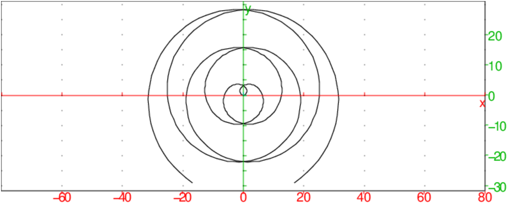
L’équation polaire de la spirale hyperbolique est :
r=a/θ
C’est l’inverse de la spirale d’Archimède.
Oy est un axe de symétrie.
Cette courbe admet comme asymptote y=a.
On tape pour a=2 :
plotpolar(2/x,x,-5*pi-pi/3,5*pi+pi/3)
On obtient :
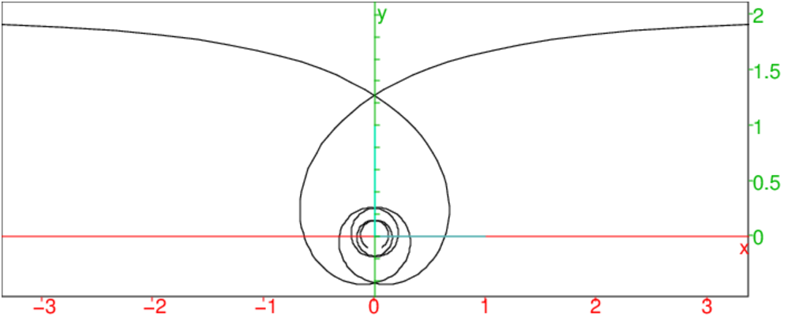
L’équation polaire de la spirale parabolique est :
(r−a)2 =2apθ
r=a ± √(2apθ)
On tape pour a=2 et p=1/2:
plotpolar(2+sqrt(2*x),x,-5*pi-pi/3,5*pi+pi/3)
plotpolar(2-sqrt(2*x),x,-5*pi-pi/3,5*pi+pi/3)
On obtient :
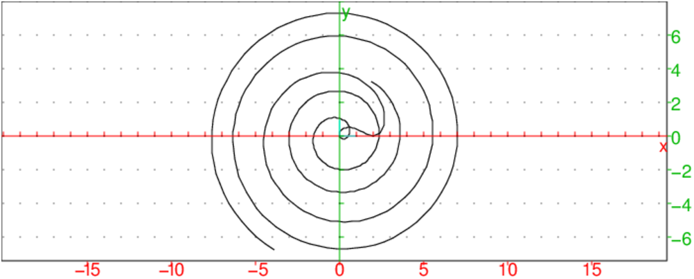
L’équation polaire de la spirale logarithmique est :
r=aexp(mθ)
On tape pour a=1 et m=1/4 :
plotpolar(exp(x/4),x,-5*pi,5*pi/4)
On obtient :
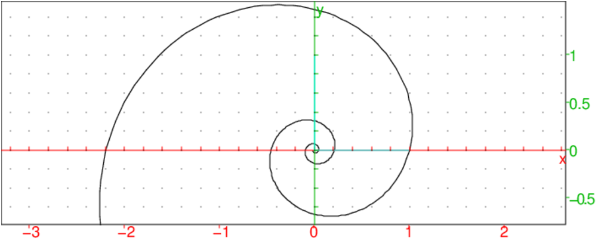
L’équation polaire de la spirale de Galilée est :
r=a(1−mθ2)
On tape pour a=1 et m=0.015 :
plotpolar((1-0.015*x^2),x,-5*pi-pi/3,5*pi+pi/3)
On obtient :
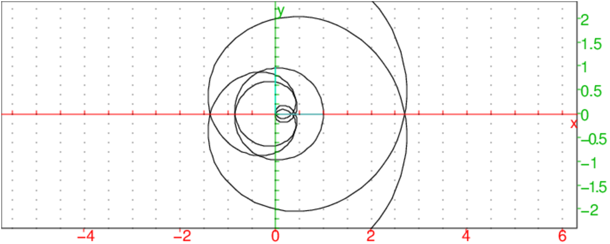
L’équation polaire de la spirale de Fermat est :
r=± a√(θ)
On tape pour a=1 :
plotpolar(sqrt(x),x,0,5*pi+pi/3),
plotpolar(-sqrt(x),x,0,5*pi+pi/3)
On obtient :
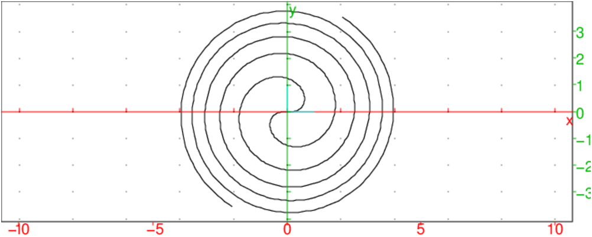
L’équation polaire de la spirale de Poinsot est :
r=a/cosh(mθ)
On tape pour a=2 et m=0.2 :
plotpolar(2/cosh(0.2*x),x,-5*pi-pi/2,5*pi+pi/2)
On obtient :
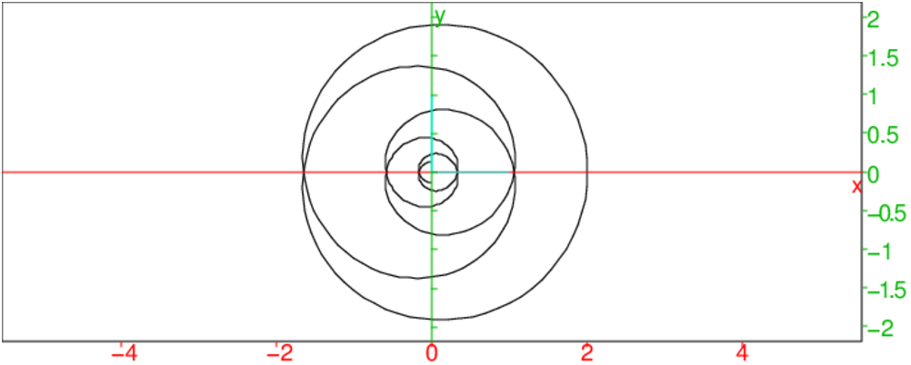
L’équation polaire du lituus est :
r=a/sqrt(θ)
Si M est un point de cette courbe, et si m est le point de l’axe des x
tel que Om=OM, alors l’aire du secteur circulaire OmM est constante.
On tape pour a=2 :
M:=point(exp(i*pi/3)*2/sqrt(pi/3));
O:=point(0);m:=point(2/sqrt(pi/3));
affichage(arc(m,M,2*pi/3),2+ligne_tiret);
affichage(segment(O,M),2+ligne_tiret);
plotpolar(2/sqrt(x),x,-5*pi-pi/2,5*pi+pi/2)
On obtient :
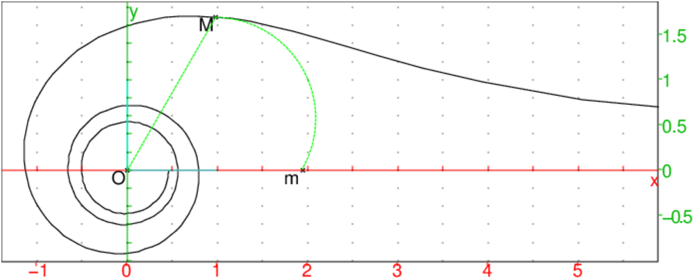
L’équation polaire de la courbe du spiral est :
r=a/(1+m*exp(k*θ)) où k>0.
On tape pour a=1, et m=1 et k=0.2 :
plotpolar(1/(1+exp(0.2*x)),x,-7*pi-pi/2,7*pi+pi/2)
On obtient :
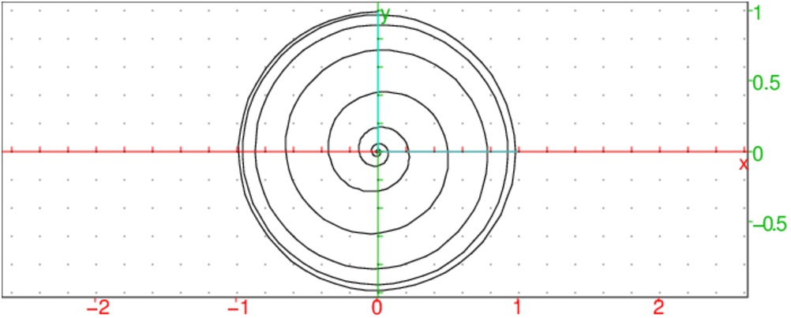
Oy est un axe de symétrie.
Cette courbe admet comme asymptote y=1
Elle a une infinité de points doubles.
Elle a des points d’inflexion qui sont sur les droites d’angles 1 radian et
-1 radian.
On tape :
plotpolar(x+1/x,x,-5*pi-4*pi/3,-0.01),
plotpolar(x+1/x,x,0.01,5*pi+4*pi/3)
On obtient :
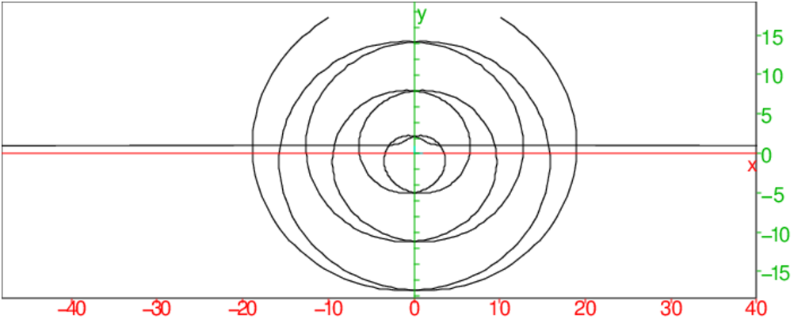
L’équation polaire de la cochléoïde est :
r=asin(θ)/θ.
Si A:=point(A), le cercle de diamètre OA passe par les points où r est maximum.
On tape pour a=2 :
plotpolar(2*sin(x)/x,x,x=0,-5*pi),
plotpolar(2*sin(x)/x,x=0,5*pi),
affichage(cercle(0,point(2)),2+ligne_tiret)
On obtient :
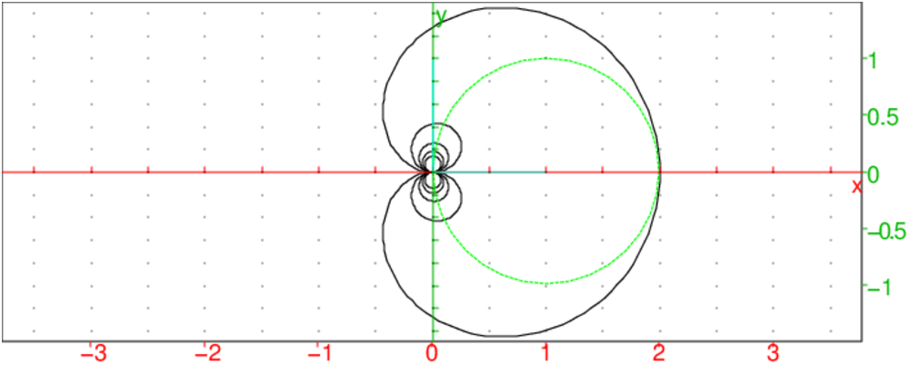
C’est une courbe C telle quel le triangle OMA soit rectangle en O,
lorsque O est l’origine, M est un point de C et A un point de la
tangente en M à C tel que OA=a=cste.
C’est aussi l’inverse d’une développante de cercle et la podaire d’une
spirale hyperbolique.
On a : OA2+OM2=a2=(mr)2+r2 avec m=r/r′=pente de la tangente en M.
Donc la spirale tractrice a comme équation polaire :
r2+r4/r′2=a2 (r′ désigne la dérivée de r
par rapport à θ).
c’est à dire :
± θ=(√a2−r2/r− acos (r/a))
On tape :
plotparam(r*exp(i*(sqrt(2^2-r^2)/r-acos(r/2))),r=-2..2,tstep=0.001);
plotparam(r*exp(-i*(sqrt(2^2-r^2)/r-acos(r/2))),r=-2..2,tstep=0.001)
On obtient :
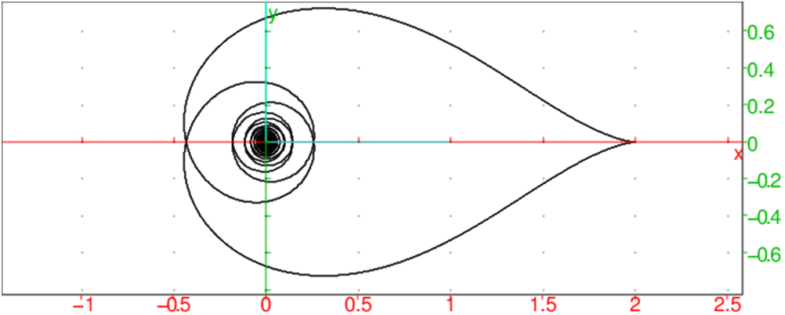
La clothoïde est une courbe transcendante plane dont la courbure est proportionnelle à l’abscisse curviligne ou encore dont le rayon de courbure est inversement proportionnel à l’abscisse curviligne.
Elle est également appelée spirale de Cornu, en référence à Alfred
Cornu, le physicien français qui l’a redécouverte. Plus rarement, elle
peut apparaître sous le nom de radioïde aux arcs, spirale d’Euler
(Leonhard Euler en est le véritable codécouvreur et qui l’a complètement
formulée suite aux travaux de Jacques Bernoulli sur les déformations d’une
lamelle élastique), mais encore spirale de Fresnel (qui l’a redécouverte
plus tard dans ses travaux sur les franges de diffraction de la lumière au
travers d’une fente rectiligne, avant que sa formule soit finalement
identifiée comme équivalente à la formule d’Euler), ou encore plus
récemment spirale de transition d’un rail de Talbot (suite aux travaux
cherchant à réduire les effets d’une montée brutale de la force
centrifuge dans l’amorce d’un virage), une dénomination qui recouvre aussi
son utilisation dans la conception des raccordements de virages routiers.
Concrètement, elle représente la trajectoire d’une automobile se
déplaçant à vitesse stabilisée et dont on tourne le volant
progressivement. C’est donc la trajectoire que l’on adopte pour le tracé des
autoroutes et des voies ferrées. En pratique, on n’utilise cette courbe que
pour assurer le raccordement progressif d’un alignement droit et d’un arc de
cercle.
Pour les mêmes raisons, on utilise la clothoïde aux fins de courbes dans
les tracés des chemins de fer parce qu’un véhicule suivant ce tracé à
une vitesse constante subit une accélération angulaire continue mais pas
constante, ce qui réduit à la fois les efforts sur les rails et l’inconfort
des passagers dans les voitures. On retrouve cette courbe dans les boucles
verticales ou loopings des montagnes russes pour le confort des passagers, afin
que l’accélération verticale subie soit continue.
Enfin, les sabots montés sur les pylones de téléphériques, et qui
supportent le cable porteur, adoptent cette forme. De fait, il est possible de
faire circuler la cabine à sa vitesse maximale sur le pylone, sans incommoder
les passagers.
Hors ces aspects cinématiques, la clothoïde intervient en sidérurgie
pour aplanir ou cintrer les tôles et barres de grande épaisseur (au-delà
de 30 mm). On limite ainsi le risque d’apparition de criques tout en ménageant
le matériel. Typiquement, les outils concernés sont la coulée continue et
les cintreuses.
Si en un point M de cette courbe d’abscisse curviligne s, R est le rayon
de courbure, T le vecteur tangent de longueur 1 et
N le vecteur normal de longueur 1 tel que le repère T,N soit direct, on a :
| = |
| ||||||||||||||||||||
Si T fait avec Ox un angle ϕ(s), on a :
coordonnées de T : cos(ϕ(s)),sin(ϕ(s))
coordonnées de N : −sin(ϕ(s)),cos(ϕ(s))
Donc :
| = |
|
1/R est proportionnel à s donc il existe k tel que :
| =ks= |
|
ou encore :
dϕ(s)=ksds c’est à dire
ϕ(s)=ks2/2 si pour s=0 on suppose ϕ(s)=0
On peut aussi supposer k>0 i.e R>0 quitte à faire une symétrie par
rapport à Ox, on pose donc k=2/a2 et on a ϕ(s)=(s/a)2.
Si le paramétrage de cette courbe est x(t)+iy(t), on a :
coordonnées de T :
| cos(ϕ(s))= |
| , sin(ϕ(s))= |
|
ou encore puisque ds2=(x′(t)2+y′(t)2)dt2:
| cos(ϕ(s))ds=cos((s/a)2)=x′(t)dt sin(ϕ(s))ds=sin((s/a)2)=y′(t)dt |
La courbe peut être définie paramètriquement par les équations suivantes :
| x(t)= | ∫ |
| cos((s/a)2)ds, y(t)= | ∫ |
| sin((s/a)2)ds |
ou en posant u=s/a on a ds=adu donc :
| x(t)=a | ∫ |
| cos(u2)du, y(t)=a | ∫ |
| sin(u2)du |
ou en modifiant le paramètre t
| x(t)=a | ∫ |
| cos(u2)du, y(t)=a | ∫ |
| sin(u2)du |
On peut également définir la clothoïde par une équation intrinsèque (équation de Bernoulli, résolue par Euler avec une intégrale curviligne) : puisque
| ks= |
|
2R · s = 2/k=b ou si on suppose R>0 2R · s =a2
où R représente le rayon de courbure local et s l’abscisse curviligne. On peut aussi l’écrire préférablement :
2s=bκ
où κ = 1/R, représente la courbure locale (signée dans le repère
de Frenet ou non signée si b=a2), avec l’avantage que cette équation
évite la singularité du
point d’inflexion au centre de symétrie de la spirale (où le rayon de
courbure est localement indéfini, tendant simultanément vers plus et moins
l’infini, selon le côté d’approche de ce point d’inflexion, tandis que la
courbure est nulle sur ce point d’inflexion), la courbure ne tendant vers
l’infini qu’à l’approche des deux points asymptotiques autour desquels
s’enroule la spirale.
Euler est également le premier à établir un développement en série
des coordonnées paramétriques des points de la courbe (en fonction de
l’abscisse curviligne) :
On sait que :
| cos(u)= |
| (−1)n |
|
| sin(u)= |
| (−1)n |
|
donc :
| ⎧ ⎪ ⎪ ⎪ ⎨ ⎪ ⎪ ⎪ ⎩ |
|
Si on s’intéresse au comportement de la courbe lorsque l’abscisse curviligne tend vers l’infini, étant donné que la courbure croit linéairement avec cette abscisse, le rayon de courbure décroit en même temps de façon inversement proportionnelle.
Par exemple entre deux points sur la clothoïde séparés par une longueur d’arc Δ s, la courbure κ, s’accroit de Δ κ = 2 Δ s / a2 puisque 2s=bκ=a2κ.
Par conséquent le rayon de courbure passe de R = 1/κ, à R+Δ R = 1/κ + Δ κ = 1/κ + 2 Δ s / a2.
La différence de rayon de courbure (mesuré hors du point d’inflexion sur la même branche de la double spirale, par exemple sur la branche du premier cadran, de coordonnées positives) est alors :
| Δ R = |
| − |
| = − 2 R2 |
|
En résumé
Cette courbe a un rayon de courbure en un point M qui est inversement
proportionnel à la longueur de l’arc OM.
Si a est une constante arbitraire, son équation paramétrique est :
x(t)=a∫0t cos(u2)du
y(t)=a∫0t sin(u2)du
On tape par exemple pour a=1:
plotparam(int(cos(u^2)+i*sin(u^2),u,0,t),t=-6..6)
On obtient :
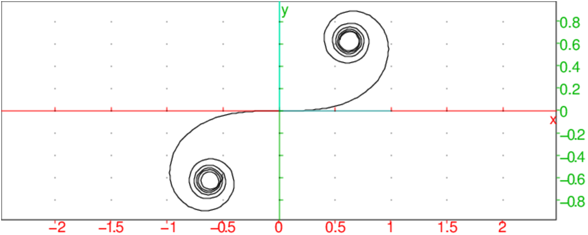
^2),u,0,16),polynom)^4/2+u^8/24-u^12/720+u^16/40320^4/2+u^8/24-u^12/720+u^16/40320,u,0,t)^5/10+t^9/216-t^13/9360+t^17/685440^2),u,0,16),polynom)^2-u^6/6+u^10/120-u^14/5040^2-u^6/6+u^10/120-u^14/5040,u,0,t)^3/3-t^7/42+t^11/1320-t^15/75600^n*t^(4*n+1)/((2n)!*(4*n+1)),n=0..50);^n*t^(4*n+3)/((2n+1)!*(4*n+3)),n=0..50);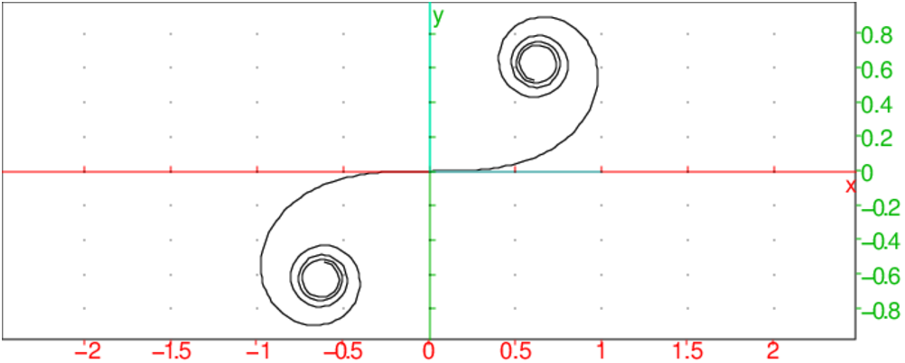
Avec Xcas et la tortueclotho(ds,k,n):={
local s;
s:=0;
repeat
avance ds;
s:=s+ds;
tourne_gauche k*s;
until s==n;
s:=0;
leve_crayon;
position(100,100);
cap 180;
baisse_crayon;
repeat
avance ds;
s:=s+ds;
tourne_gauche k*s;
until s==n;
}:;
On tape par exemple dans un écran de dessin tortue (Alt+d) :
efface; cache_tortue; clotho(1,1,50);
On obtient :
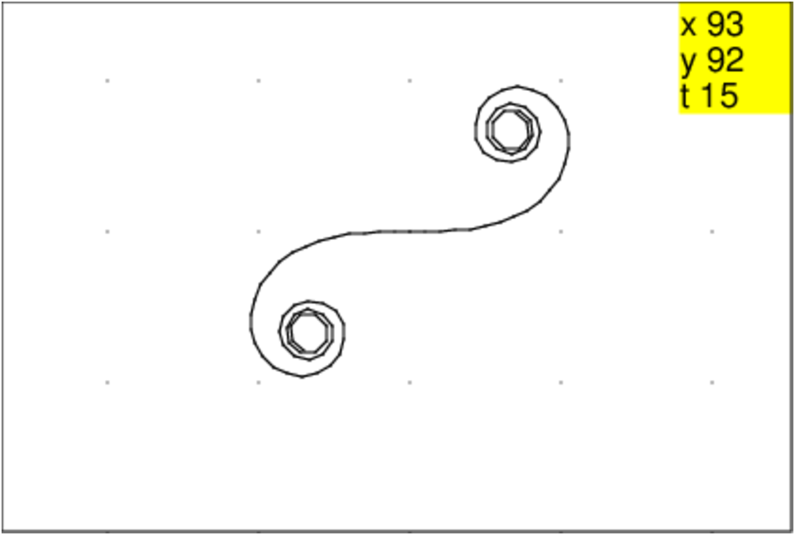
clotho0(ds,k,n):={
local s;
s:=0;
repeat
avance ds;
s:=s+ds;
tourne_gauche k*s;
until s==n;
}:;
efface;
cache_tortue;
clotho0(1,1,720);
on obtient les 2 boucles de la courbe et une tortue qui est revenue à sa
position de départ car :
efface; clotho0(1,1,360) fait revenir la tortue à sa position
de départ mais avec un cap de 180.
On peut aussi écrire une procédure récursive :
clothor(s,ds,k,n):={
si s<n alors
avance ds;
tourne_gauche(k*s);
clothor(s+ds,ds,k,n);
fsi;
}:;
efface;
cache_tortue;
clothor(0,1,1,100);
leve_crayon;
position(100,100);
cap 180;
baisse_crayon;
clothor(0,1,1,100);
ou encore en allant en reculons :
clothor(s,ds,k,n):={
si s>-n alors
avance ds;
tourne_gauche(k*s);
clothor(s+ds,ds,k,n);
fsi;
}:;
efface;
cache_tortue;
clothor(0,-1,1,720);
Les courbes de Lissajous ont comme équation paramétrique :
x(t)=acos( t)
y(t)=bsin( t+φ)
Avec Xcas
On tape :
k:=element(0 .. 4); m:=element(0 .. 4); p:=element(0..pi/2); plotparam(3*cos(k*t)+i*2*sin(m*t+p),t);
On peut voir les différentes courbes en faisant varier m et p.
En particulier k=1 et m=1 puis on fait varier p,
k=2 et m=3 puis on fait varier p etc...